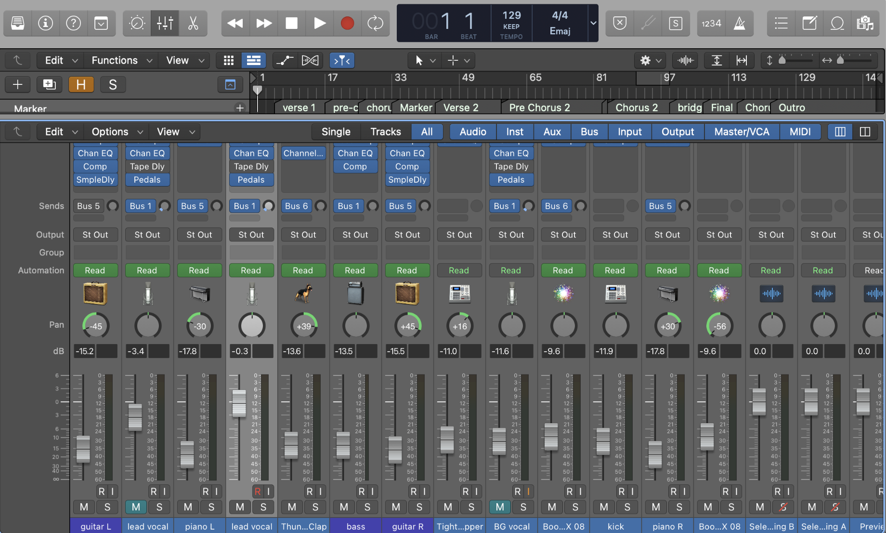

The Axis
Think of panning as a number line from −100 to +100. Every sound gets an X-coordinate.
| Position | Meaning |
|---|---|
| −100 | Hard L |
| −50 | Left |
| 0 | Center |
| +50 | Right |
| +100 | Hard R |
Your job: distribute elements so no zone is overcrowded and energy is balanced.
The Rules as Axioms
Axiom 1 — Low frequencies anchor at X = 0
Bass and kick live at the center. Frequencies below ~80–100 Hz are effectively omnidirectional.
Axiom 2 — The centre is load-bearing
X = 0 is a structural column. Overloading it reduces clarity and punch.
Axiom 3 — Symmetry ≠ balance
Balance depends on perceived energy, not mirrored positions.
Axiom 4 — Width is a function of frequency
| Frequency Range | Approx. Hz | Pan Zone |
|---|---|---|
| Low | 20 – 250 Hz | ±0 – 10 |
| Mid | 250 Hz – 4 kHz | ±20 – 50 |
| High | 4 – 20 kHz | ±60 – 100 |
The usable panning range expands as pitch rises — low frequencies cluster near the center, while high frequencies extend toward the edges.
Axiom 5 — Duplicate elements must diverge
Two identical signals centered add in phase (+6 dB). Panning them apart creates width without increasing volume.
Two diverged copies > one centred copy.
The Placement Map
| Element | X Position | Notes |
|---|---|---|
| Kick drum | 0 | Never move this |
| Bass / 808 | 0 | Never move this |
| Lead vocal | 0 | Anchor of the song |
| Snare | 0 (or ±5) | Needs to punch centre |
| Lead synth / piano | 0 to ±15 | Slight width ok |
| Claps | ±20 to ±40 | Spread for width |
| Hi-hats | ±30 to ±60 | Alternate L/R |
| Rhythm guitar | ±50 to ±70 | Classic rock: hard pan ±100 |
| Backing vocals | ±30 to ±60 | Mirror pairs symmetrically |
| Harmony vocals | ±50 to ±80 | Wider than backing |
| Pads / atmosphere | ±60 to ±100 | Fill the edges |
The Frequency–Space Matrix
Think of your mix as a 2D grid — pan position (horizontal) vs frequency (vertical).
| Hard L | Left | Center | Right | Hard R | |
|---|---|---|---|---|---|
| High | Pads | Harmonies | FX | Harmonies | Pads |
| Mid | Guitar | BVox | Lead vocal | BVox | Piano |
| Low | Perc | Clap | Kick/Bass/Snare | Clap | Perc |
Goal: no cell empty, no cell overcrowded. Even distribution across both axes.
